Elektryka
Przyłącze 1- i 3-fazowe, rozłącznik, SPD, RCD, MCB, RCBO, styczniki, zasilacze. Obwody z fazami, przewodami i nazwami.
Free for personal use · działa w przeglądarce
Elektro Plan to projektant instalacji elektrycznej, alarmu i smart home w przeglądarce. Klikasz ściany, aparaty i symbole – to samo widzisz jako plan, rozdzielnicę, drzewo i graf i edytujesz w każdym z nich.
Łatwość użycia
Klikasz i przeciągasz, a program pilnuje reguł: podłącza zasilanie, podpowiada obwody i zgłasza błędy. Film poniżej pokazuje cały pierwszy projekt w około półtorej minuty (nagranie bez montażu).
Ściany kilkoma kliknięciami (długość możesz wpisać z klawiatury), pomieszczenia także w kształcie litery L, drzwi i okna. Możesz wczytać rzut jako podkład i ustawić skalę.
Klik w aparat wstawia go na szynę DIN: rozłącznik, RCD, wyłączniki, RCBO, zasilacze. Zasilanie podpowiada się samo.
Wybierz obwód i klikaj gniazda, oświetlenie, czujki alarmu, kamery, urządzenia smart. Podłączają się do właściwego obwodu lub centrali.
Problemy pojawiają się na bieżąco. Gotowe zestawienia: obwody, materiały, długości kabli. Eksport do SVG, PNG, CSV i druk.
Prawdziwe nagranie aplikacji: pusty projekt → ściany → rozdzielnica → osprzęt → błąd zgłoszony na bieżąco → alarm i Satel z baterią → kabel LAN → drzewo i graf → widoki obok siebie z filtrem → raport materiałów. Około półtorej minuty, z podpisami kroków (napisy można włączyć w odtwarzaczu).
Jedna instalacja, cztery widoki
Dane są jedne. Zmiana w jednym widoku natychmiast pojawia się w pozostałych – także gdy oglądasz je obok siebie.
Rysujesz mieszkanie lub dom (wiele pięter) i rozmieszczasz symbole elektryki, alarmu, smart home i sieci. Zaznaczenie urządzenia podświetla cały jego obwód i trasę zasilania.
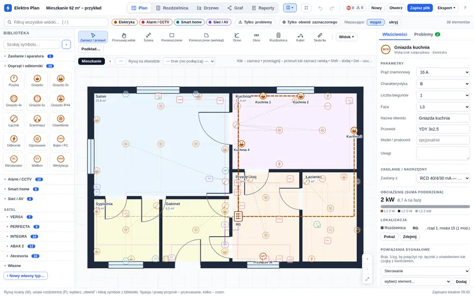
Graficzny montaż aparatów na szynach DIN – przeciągasz moduły i widzisz, ile miejsca zostało. Program podpowiada, z czego zasilany jest każdy aparat.
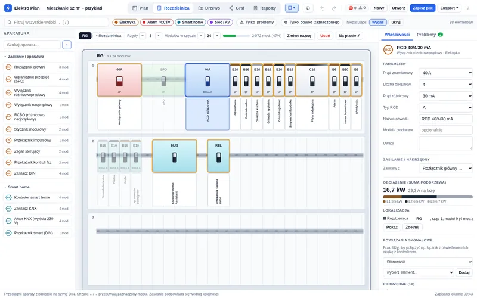
Cała instalacja od przyłącza po ostatni odbiornik jako zwijane drzewo. Idealne do szybkiego porządkowania: dodajesz elementy podrzędne, przepinasz zasilanie, zmieniasz nazwy.
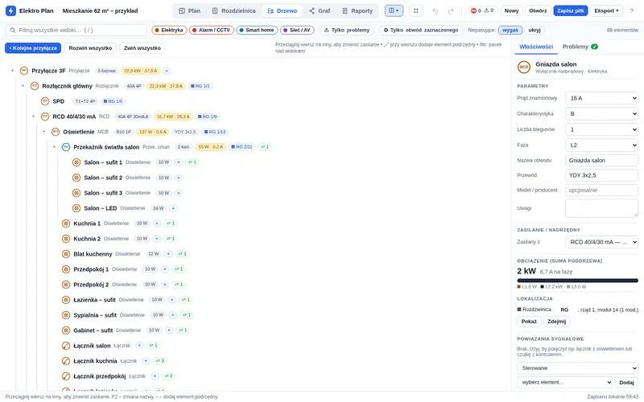
Zależności jako diagram: zasilanie, sterowanie, magistrale, połączenia radiowe i sieć LAN. Łączysz urządzenia przeciągając wskaźnik, a program pilnuje, czy dane połączenie ma sens.
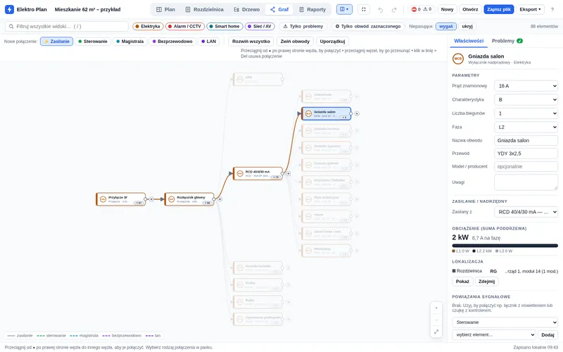
Pokaż plan, drzewo i graf jednocześnie. Zaznaczasz element w jednym panelu – od razu go widać w pozostałych. Jeden pasek filtrów działa we wszystkich widokach: szukaj po nazwie, modelu, kablu lub pomieszczeniu, pokaż tylko problemy albo tylko wybrany obwód.
Zobacz więcej zrzutów →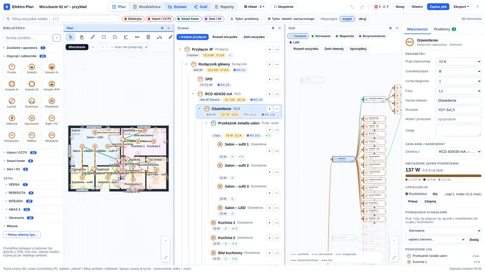
Pełne rozwiązanie
Od przyłącza do czujki dymu. Elektryka, alarm, smart home i sieć w jednym modelu, z dokumentacją na wyjściu.
Przyłącze 1- i 3-fazowe, rozłącznik, SPD, RCD, MCB, RCBO, styczniki, zasilacze. Obwody z fazami, przewodami i nazwami.
Centrale, ekspandery, manipulatory, czujki ruchu, dymu, zalania, kontaktrony, syreny i kamery. Czujki same łączą się z najbliższą centralą.
Kontrolery, przekaźniki, aktory KNX, przyciski, termostaty, czujniki i napędy rolet – z powiązaniami sterowania i magistral.
Switch PoE, access pointy, gniazda RJ45 i RTV/SAT, kable LAN prowadzone wybraną trasą.
Przeciążenia, przekrój przewodu a zabezpieczenie, brak RCD, strefy mokre (IP), spadek napięcia z geometrii planu, niesymetria faz i więcej.
Lista obwodów, zestawienie materiałów, długości kabli według przekroju i sposobu ułożenia, lista baterii i akumulatorów. CSV i druk.
Zaznacz drogę kabla: w ścianie, w podłodze, w suficie, korytko, rura. Dodawaj i usuwaj punkty trasy albo narysuj kabel narzędziem „Kabel”.
Oznacz urządzenia bezprzewodowe: rodzaj baterii, żywotność, akumulator awaryjny centrali. Nie obciążają obwodu, a lista baterii trafia do raportu.
Zmodyfikuj istniejące urządzenie (np. gniazdo z USB, inna moc, własny model), zapisz w projekcie i używaj jak zwykłego symbolu.
Walidacja
Za duży wyłącznik na cienki przewód? Gniazdo bez RCD? Osprzęt IP20 w łazience? Program zgłasza to na bieżąco, z lokalizacją („Oświetlenie, RG 1/13”) i opisem, co zmienić. Kliknięcie ostrzeżenia przenosi do elementu.
Reguły to wskazówki projektowe – nie zastępują obliczeń, norm ani uprawnień elektryka.
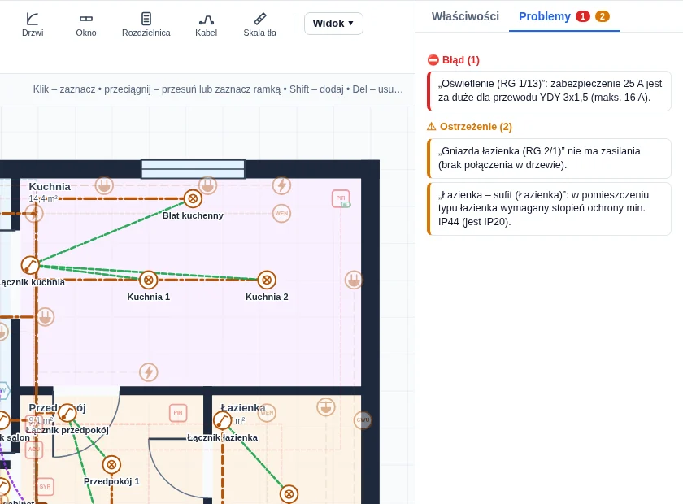
Trasy kabli
Kable LAN, magistrali i sterowania mają przewód i sposób ułożenia. Kliknij linię, a pojawią się uchwyty: ＋ dodaje punkt trasy, przeciągnięcie go przesuwa, dwuklik usuwa. Długości trafiają do zestawienia przewodów.
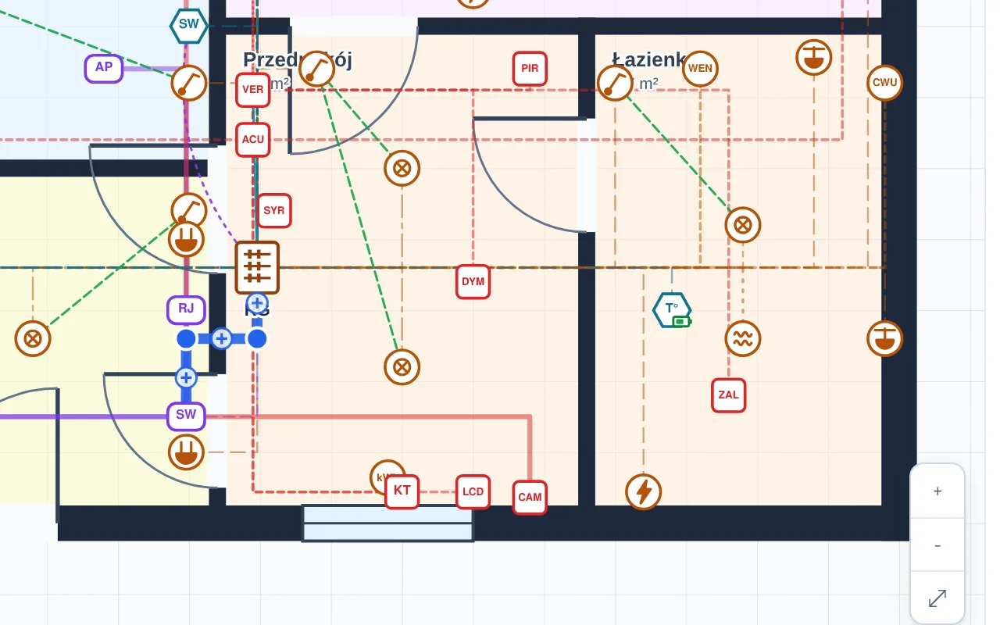
Alarm Satel i baterie
Centrale VERSA, PERFECTA i INTEGRA, kontrolery ACU i czujki ABAX 2, ekspandery i moduły. Program pilnuje zgodności: czujka radiowa łączy się z kontrolerem radiowym, manipulator pasuje do centrali własnej serii.
Wartości w katalogu (moc, akumulatory, baterie) są orientacyjne – zawsze sprawdź dokumentację producenta. Nazwy producentów to znaki towarowe ich właścicieli; narzędzie nie jest z nimi powiązane.
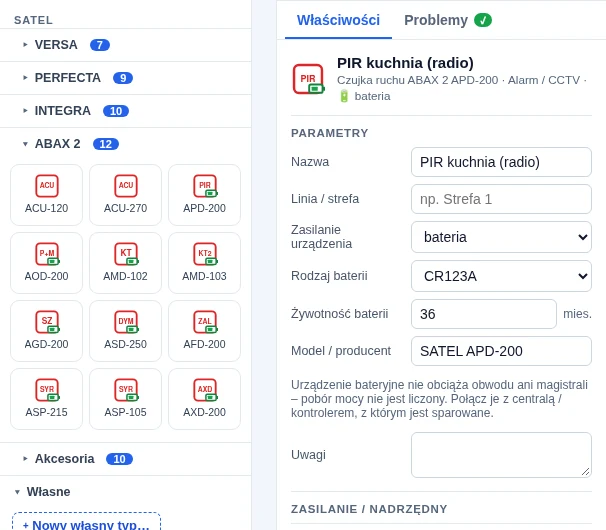
Raporty
Zestawienie materiałów z parametrami, lista obwodów z obciążeniami, szacowane długości przewodów (także według sposobu ułożenia), baterie do kupienia i wymiany. Wszystko jako CSV albo wydruk.
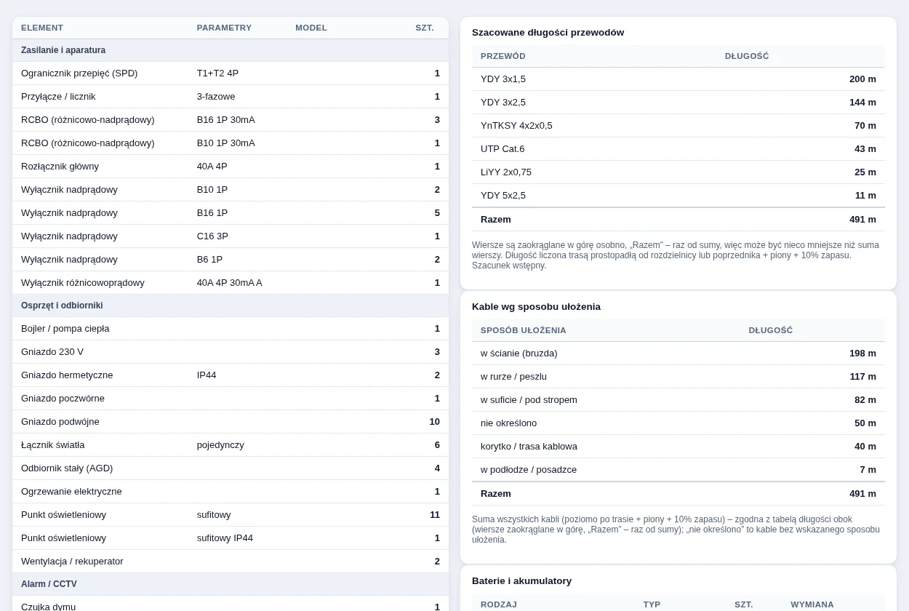
Galeria
Kliknij zrzut, aby powiększyć. Wszystkie obrazy pochodzą z prawdziwej aplikacji i przykładowego projektu mieszkania 62 m².
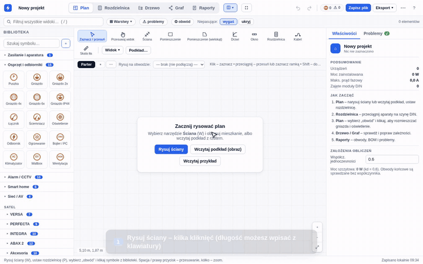
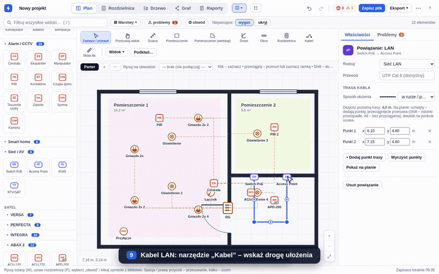
Dla kogo
Zaplanuj obwody, rozdzielnicę i rozmieszczenie gniazd, zanim zaczną się kucie ścian i zamówienia. Przygotuj listę materiałów do rozmowy z wykonawcą.
Narysuj, co jest z czym połączone: sterowanie, magistrale, radio i sieć. Sprawdź, ile kabla i baterii potrzebujesz.
Zobacz, jak wygląda zasilanie od przyłącza po odbiornik i co zgłaszają reguły. Dobre do nauki i eksperymentów.
Wynik pracy w programie to pomoc w planowaniu i rozmowie z wykonawcą – nie jest dokumentacją projektową w rozumieniu prawa budowlanego ani nie zastępuje uprawnień elektryka.
Licencja
Za darmo do użytku osobistego i niekomercyjnego. Do zastosowań zawodowych potrzebna jest osobna licencja.
Wyniki obliczeń i walidacji są wspomagające. Nie zastępują projektu, norm ani uprawnień elektryka. Prace przy instalacji wykonuj zgodnie z prawem – mogą wymagać osoby z uprawnieniami.
Pełne brzmienie: LICENSE.txt.
Pełny tekst licencji (PL / EN) Licencja komercyjna Licencja komercyjna: elektro-plan@niemojewski.eu
FAQ
Nie. Aplikacja działa w przeglądarce (komputer lub tablet). Otwierasz stronę i projektujesz. Nie ma konta ani logowania.
Projekt jest zapisywany w pamięci przeglądarki na Twoim urządzeniu i w plikach JSON, które sam zapisujesz. Aplikacja nie wysyła projektu na żaden serwer. Statystyki użycia (liczby, wartości z list zamkniętych i losowe identyfikatory – bez nazw i treści projektu) wysyła wyłącznie za Twoją zgodą – domyślnie są wyłączone, szczegóły: Prywatność. Projekt zapisuje się automatycznie w przeglądarce, a po zastąpieniu go innym poprzednią wersję przywrócisz przyciskiem „Przywróć poprzedni projekt” w menu Eksport. Mimo to rób kopie plików JSON.
Traktuj je jako wskazówki, które wyłapują typowe błędy. Nie zastępują obliczeń, norm ani uprawnień elektryka – ostateczne decyzje podejmuje osoba z uprawnieniami.
Nazwy modeli i zasady parowania (np. radio ABAX 2 z kontrolerem ACU) są odwzorowane, ale moce, akumulatory i baterie są orientacyjne. Zawsze sprawdź dokumentację producenta; pole „Model / producent” i wartości możesz edytować, a własne typy tworzyć samodzielnie.
Nie na podstawie licencji „free for personal use”. Do zastosowań zawodowych potrzebna jest osobna licencja – zobacz licencję.
Interfejs ma układ dostosowany do tabletu (większe uchwyty, długie przytrzymanie zamiast prawego przycisku), a na telefonie działa w układzie jednopanelowym. Najwygodniej jednak na komputerze – szczególnie przy rysowaniu planu i układzie kilku widoków naraz.
W aplikacji kliknij 💬 Zgłoś (górny pasek; pełna nazwa „Zgłoś błąd / pomysł” jest w pasku stanu, w Pomocy i – na telefonie – w menu ⋯). Program przygotuje zgłoszenie z podglądem treści i otworzy je na GitHubie; opcjonalnie dołączysz zrzut ekranu. Więcej.
Tylko jeśli sam się zgodzisz. Przy pierwszym uruchomieniu możesz wybrać poziom podstawowy (czas pracy, liczba projektów i elementów) albo rozszerzony (jak korzystasz z funkcji), albo odmówić – domyślnie nic nie jest wysyłane. Nigdy nie wysyłamy nazw, adresów ani treści projektu; każda instalacja i projekt mają tylko losowy identyfikator, a wysyłane zdarzenia możesz podejrzeć na żywo w oknie „Prywatność i statystyki”. Szczegóły: Prywatność.
Nie automatycznie. Treść widzisz w podglądzie, a zgłoszenie publikujesz dopiero Ty na swoim koncie GitHub – jest ono publiczne. Projekt nie jest dołączany (możesz go dodać ręcznie), a zrzut ekranu jest opcjonalny. Szczegóły: Prywatność.
Projekt jako plik JSON, plan piętra jako SVG lub PNG (z legendą i skalą), listę obwodów i zestawienie materiałów jako CSV oraz wydruk bieżącego widoku.
Możesz zacząć od przykładowego mieszkania („Nowy → Projekt przykładowy”) i je zmieniać albo od pustego planu. W programie jest pomoc (klawisz ?) ze skrótami, a każdą zmianę można cofnąć (Ctrl+Z).
Twoje uwagi
Program rozwija się dzięki zgłoszeniom użytkowników. Zgłoś błąd, zaproponuj funkcję albo zadaj pytanie – na GitHubie, publicznie, żeby inni mogli się dołączyć i nie powtarzać zgłoszeń.
Coś nie działa albo liczy się źle? Opisz kroki, które do tego prowadzą, i co się stało.
💡Czego brakuje w projektowaniu Twojej instalacji? Opisz sytuację, w której by się przydało.
❓Nie wiesz, jak coś zrobić? Zapytaj – odpowiedź pomoże też innym.
Najwygodniej zrobić to prosto z aplikacji: przycisk 💬 Zgłoś na górnym pasku (na telefonie: menu ⋯) sam wypełnia formularz (wersja programu, przeglądarka) i pozwala opcjonalnie dołączyć zrzut ekranu. Nic nie jest wysyłane automatycznie. Zobacz istniejące zgłoszenia · Prywatność
Zgłoszenia na GitHubie są publiczne i wymagają konta GitHub. Nie podawaj w nich adresów, danych osobowych ani haseł i kodów (np. do alarmu). Bez konta napisz na elektro-plan@niemojewski.eu; luki bezpieczeństwa zgłaszaj tylko prywatnie, e-mailem.
Otwórz aplikację w przeglądarce. Za darmo do użytku osobistego.
Uruchom aplikację